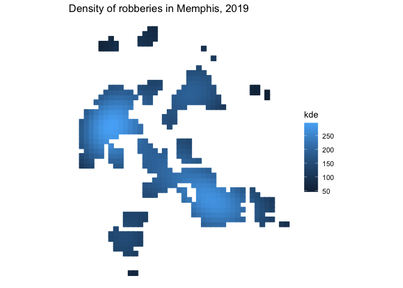

sfhotspot provides functions to identify and understand clusters of points (typically representing the locations of places or events). All the functions in the package work on and produce simple features (SF) objects, which means they can be used as part of modern spatial analysis in R.
Installation
You can install the development version of sfhotspot from GitHub with:
# install.packages("remotes")
remotes::install_github("mpjashby/sfhotspot")Functions
sfhotspot has the following functions. All can be used by just supplying an SF object containing points, or can be configured using the optional arguments to each function.
| name | use |
|---|---|
hotspot_count() |
Count the number of points in each cell of a regular grid. Cell size can be set by the user or chosen automatically. |
hotspot_change() |
Measure the change in the count of points in each cell between two periods of time. |
hotspot_kde() |
Estimate kernel density for each cell in a regular grid. Cell size and bandwidth can be set by the user or chosen automatically. |
hotspot_dual_kde() |
Compare the kernel density of two layers of points, e.g. to estimate the local risk of an event occurring relative to local population. |
hotspot_gistar() |
Calculate the Getis–Ord statistic for each cell in a regular grid, while optionally estimating kernel density. Cell size, bandwidth and neighbour distance can be set by the user or chosen automatically. |
hotspot_classify() |
Classify grid cells according to whether they have had significant clusters of points at different time periods. All parameters can be chosen automatically or be set by the user using the hotspot_classify_params() helper function. |
The results produced by hotspot_count(), hotspot_change(), hotspot_kde(), hotspot_dual_kde() and hotspot_classify() can be easily plotted using included methods forautoplot() and autolayer().
There are also included datasets:
-
memphis_robberies, containing records of 2,245 robberies in Memphis, TN, in 2019. -
memphis_robberies_jan, containing the same data but only for the 206 robberies recorded in January 2019. -
memphis_population, containing population counts for the centroids of 10,393 census blocks in Memphis, TN, in 2020.
Example
We can use the hotspot_gistar() function to identify cells in a regular grid in which there are more/fewer points than would be expected if the points were distributed randomly. In this example, the points represent the locations of personal robberies in Memphis, which is a dataset included with the package.
# Load packages
library(sf)
#> Linking to GEOS 3.11.0, GDAL 3.5.3, PROJ 9.1.0; sf_use_s2() is TRUE
library(sfhotspot)
library(tidyverse)
#> ── Attaching core tidyverse packages ──────────────────────── tidyverse 2.0.0 ──
#> ✔ dplyr 1.1.4 ✔ readr 2.1.5
#> ✔ forcats 1.0.0 ✔ stringr 1.5.1
#> ✔ ggplot2 3.5.1 ✔ tibble 3.2.1
#> ✔ lubridate 1.9.4 ✔ tidyr 1.3.1
#> ✔ purrr 1.0.4
#> ── Conflicts ────────────────────────────────────────── tidyverse_conflicts() ──
#> ✖ dplyr::filter() masks stats::filter()
#> ✖ dplyr::lag() masks stats::lag()
#> ℹ Use the conflicted package (<http://conflicted.r-lib.org/>) to force all conflicts to become errors
# Transform data to UTM zone 15N so that we can think in metres, not decimal
# degrees
memphis_robberies_utm <- st_transform(memphis_robberies, "EPSG:32615")
# Identify hotspots, set all the parameters automatically by not specifying cell
# size, bandwidth, etc.
memphis_robberies_htspt <- hotspot_gistar(memphis_robberies_utm, quiet = TRUE)
# Visualise the hotspots by showing only those cells that have significantly
# more points than expected by chance. For those cells, show the estimated
# density of robberies.
memphis_robberies_htspt |>
filter(gistar > 0, pvalue < 0.05) |>
ggplot(aes(colour = kde, fill = kde)) +
geom_sf() +
scale_colour_distiller(aesthetics = c("colour", "fill"), direction = 1) +
labs(title = "Density of robberies in Memphis, 2019") +
theme_void()